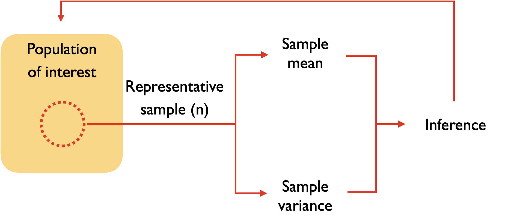
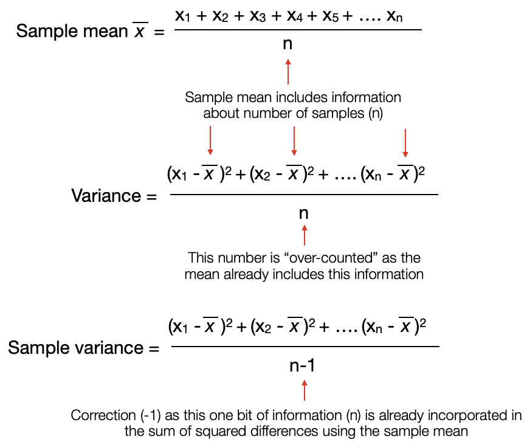

Estimating Mean/Variance of a Population#
We would like to infer the measures of centrality and spread of a population based on a representative/random sample

Data preparation#
Let’s simulate a population and see how we can estimate its mean/variance through a random sample
We’ll simulate a population of 100,000 residents with their height (cm) measurements
Show code cell source
library(tidyverse)
# Imagine a town with 100,000 residents and measure everyone's height (cm)
population <- rnorm(100000,160,25)
# set plot dimensions
options(repr.plot.width=8, repr.plot.height=8)
population %>%
tibble(height=.) %>%
ggplot(aes(x=height)) +
geom_histogram(fill="salmon", binwidth=1) +
theme_grey(base_size=16)
── Attaching core tidyverse packages ───────────────────────────── tidyverse 2.0.0 ──
✔ dplyr 1.1.1 ✔ readr 2.1.4
✔ forcats 1.0.0 ✔ stringr 1.5.0
✔ ggplot2 3.4.2 ✔ tibble 3.2.1
✔ lubridate 1.9.2 ✔ tidyr 1.3.0
✔ purrr 1.0.1
── Conflicts ─────────────────────────────────────────────── tidyverse_conflicts() ──
✖ dplyr::filter() masks stats::filter()
✖ dplyr::lag() masks stats::lag()
ℹ Use the conflicted package (<http://conflicted.r-lib.org/>) to force all conflicts to become errors
Here, we can calculate the population mean and variance that we will try and estimate through sampling
Show code cell source
variance <- function(data) {
input_mean <- mean(data)
sum_squares <- sum((data-input_mean)^2)
num_input <- length(data)
variance <- sum_squares/num_input
return(variance)
}
population_mean <- mean(population)
population_var <- variance(population)
tibble(stat=c("Population mean","Population variance"),
value=c(population_mean, population_var))
| stat | value |
|---|---|
| <chr> | <dbl> |
| Population mean | 160.0402 |
| Population variance | 625.2841 |
What are the estimates of mean and variance in one sample?#
Let’s try and take one sample (n=10) and calculate the mean and variance of the sample and see if it resembles the population parameters
Show code cell source
# sample once and report the mean and variance
# you can rerun this cell to see how it changes with each sample
sample_data <- sample(population, size=10, replace=F)
sample_mean <- mean(sample_data)
sample_var <- variance(sample_data)
tibble(stat=c("Population mean","Population variance",
"Sample mean","Sample variance"),
value=c(population_mean, population_var,
sample_mean,sample_var))
| stat | value |
|---|---|
| <chr> | <dbl> |
| Population mean | 160.0402 |
| Population variance | 625.2841 |
| Sample mean | 171.3290 |
| Sample variance | 177.3336 |
How are the sample estimates over a long run?#
Let us repeat the samples multiple times to see how these sample estimates change over the long run. We can also determine the average of these sample estimates and to see if they approximate the population estimates
We define a function sample_multiple that repeats the sampling and calculates the sample mean and variance for each replicate
sample_multiple(num_replicate = number of replicates,
num_sample = sample size per replicate
pop = population)
Show code cell content
# function to generate replicates by calling sample_once function
sample_multiple <- function(num_replicate, num_sample, pop) {
replicate(num_replicate,
tibble(value=sample(pop, num_sample, replace=F)),
simplify = FALSE) %>%
bind_rows %>%
mutate(replicate=rep(1:num_replicate, each=num_sample), n=num_sample) %>% # add replicate and sample numbers
return
}
# for reproducibility
set.seed(101)
# sample 10 at a time, and repeat 1000 times for each sample
sample_1000 <- sample_multiple(num_replicate=1000,
num_sample=10,
pop=population)
head(sample_1000)
tail(sample_1000)
| value | replicate | n |
|---|---|---|
| <dbl> | <int> | <dbl> |
| 163.4539 | 1 | 10 |
| 150.1739 | 1 | 10 |
| 179.1317 | 1 | 10 |
| 134.2324 | 1 | 10 |
| 177.8324 | 1 | 10 |
| 155.6900 | 1 | 10 |
| value | replicate | n |
|---|---|---|
| <dbl> | <int> | <dbl> |
| 105.8971 | 1000 | 10 |
| 151.7960 | 1000 | 10 |
| 173.1708 | 1000 | 10 |
| 165.0167 | 1000 | 10 |
| 164.0956 | 1000 | 10 |
| 155.7179 | 1000 | 10 |
We will visualize the distribution of the sample mean and variance estimates over 1000 replicates. We will then calculate the average of these sample estimates and compare them to the population estimates
redline indicates the population estimateblueline indicates the average of the sample estimate over 1000 replicates
Show code cell content
estimate_mean_var <- sample_1000 %>%
group_by(replicate) %>%
summarize(mean = mean(value),
var = variance(value))
# find average estimates of mean and variance over multiple runs
estimate_mean <- estimate_mean_var %>%
pull(mean) %>%
mean
estimate_var <- estimate_mean_var %>%
pull(var) %>%
mean
Show code cell source
# set plot dimensions
options(repr.plot.width=8, repr.plot.height=8)
estimate_mean_var %>%
ggplot(aes(x=mean)) +
geom_histogram(alpha=0.5) +
geom_vline(xintercept = population_mean, color="red", size=1) +
geom_vline(xintercept = estimate_mean, color="blue", size=1) +
theme_grey(base_size=16)
estimate_mean_var %>%
ggplot(aes(x=var)) +
geom_histogram(alpha=0.5) +
geom_vline(xintercept = population_var, color="red", size=1) +
geom_vline(xintercept = estimate_var, color="blue", size=1) +
theme_grey(base_size=16)
Warning message:
“Using `size` aesthetic for lines was deprecated in ggplot2 3.4.0.
ℹ Please use `linewidth` instead.”
`stat_bin()` using `bins = 30`. Pick better value with `binwidth`.
`stat_bin()` using `bins = 30`. Pick better value with `binwidth`.
Show code cell source
tibble(stat=c("Population mean","Population variance",
"Sample mean","Sample variance"),
value=c(population_mean, population_var,
estimate_mean,estimate_var))
| stat | value |
|---|---|
| <chr> | <dbl> |
| Population mean | 160.0402 |
| Population variance | 625.2841 |
| Sample mean | 160.5045 |
| Sample variance | 564.5713 |
It appears that in multiple samples over a long run:
The sample mean is a good estimate of the population mean
The sample variance is underestimating the population variance
To address the underestimation of the population variance, we will define another function variance_unbiased that includes a correction factor
Instead of dividing the sum of squares by the number of samples, we divide it by the
number of samples minus 1
Show code cell content
variance_unbiased <- function(data) {
input_mean <- mean(data)
sum_squares <- sum((data-input_mean)^2)
num_input <- length(data) - 1 # correction factor
variance_unbiased <- sum_squares/num_input
return(variance_unbiased)
}
We will take 1000 replicates of samples (n=10) from the population and find the average of the sample mean and unbiased variance estimators
Show code cell content
estimate_mean_var_unbiased <- sample_1000 %>%
group_by(replicate) %>%
summarize(mean=mean(value),
var=variance_unbiased(value))
estimate_var_unbiased <- estimate_mean_var_unbiased %>%
pull(var) %>%
mean
We can plot the distribution and compare the average of the sample estimates with the population estimates
redline indicates the population estimateblueline indicates the average of sample estimate over 1000 replicates
Show code cell source
# set plot dimensions
options(repr.plot.width=8, repr.plot.height=8)
estimate_mean_var_unbiased %>%
ggplot(aes(x=mean)) +
geom_histogram(alpha=0.5) +
geom_vline(xintercept = population_mean, color="red", size=1) +
geom_vline(xintercept = estimate_mean, color="blue", size=1) +
theme_grey(base_size=16)
estimate_mean_var_unbiased %>%
ggplot(aes(x=var)) +
geom_histogram(alpha=0.5) +
geom_vline(xintercept = population_var, color="red", size=1) +
geom_vline(xintercept = estimate_var_unbiased, color="blue", size=1) +
theme_grey(base_size=16)
`stat_bin()` using `bins = 30`. Pick better value with `binwidth`.
`stat_bin()` using `bins = 30`. Pick better value with `binwidth`.
Show code cell source
tibble(stat=c("Population mean","Population variance",
"Sample mean","Sample variance",
"Sample variance (unbiased)"),
value=c(population_mean, population_var,
estimate_mean,estimate_var, estimate_var_unbiased))
| stat | value |
|---|---|
| <chr> | <dbl> |
| Population mean | 160.0402 |
| Population variance | 625.2841 |
| Sample mean | 160.5045 |
| Sample variance | 564.5713 |
| Sample variance (unbiased) | 627.3015 |
We see that the unbiased estimate of the variance with the correction factor is closer to the true population variance
Why is n-1 used as a correction in the sample variance estimation?#
Intuitively:

for a technical explanation see: http://mathcenter.oxford.emory.edu/site/math117/besselCorrection/
Why are unbiased sample estimators important?#
The unbiased sample estimates of the mean and variance can be used as parameters to calculate the distribution of the population analytically using a theoretical distribution
In other words, the sample can be used to infer the population, provided we have an idea of the underlying distribution
Let’s take a sample of 100 people and calculate the sample mean and variance
Show code cell source
num_samples <- 100
# sample without replacement
sample_fraction <- sample(population, size=num_samples, replace=F)
# calculate sample mean and variance (unbiased)
sample_mean <- mean(sample_fraction)
sample_var <- sum((sample_fraction - sample_mean)^2)/(num_samples-1) # correction
tibble(stat=c("Sample mean","Sample variance"),
value=c(sample_mean, sample_var))
| stat | value |
|---|---|
| <chr> | <dbl> |
| Sample mean | 160.2870 |
| Sample variance | 677.0657 |
We can now use these sample estimates to recreate the population using a theoretical distribution
a normal distribution of heights is assumed
the shape of a normal distribution is determined by 2 parameters, the mean and the standard deviation (the square root of the variance)
We generate values of heights from a theoretical normal distribution using the rnorm function
rnorm(number of values, mean, standard deviation)
Show code cell source
population_values <- tibble(type = "population",
height = population)
sample_values <- tibble(type = "theoretical",
height = rnorm(100000,
sample_mean,
sqrt(sample_var)))
compare_dist <- bind_rows(population_values,
sample_values)
head(compare_dist)
tail(compare_dist)
| type | height |
|---|---|
| <chr> | <dbl> |
| population | 156.6504 |
| population | 154.9202 |
| population | 153.6009 |
| population | 177.4955 |
| population | 198.8322 |
| population | 139.8744 |
| type | height |
|---|---|
| <chr> | <dbl> |
| theoretical | 159.5795 |
| theoretical | 158.0847 |
| theoretical | 175.6528 |
| theoretical | 197.2000 |
| theoretical | 205.8885 |
| theoretical | 163.9360 |
We can see how the theoretical distribution of heights (based on the sample mean/variance) compares to the actual population
Show code cell source
# set plot dimensions
options(repr.plot.width=10, repr.plot.height=8)
compare_dist %>%
ggplot(aes(x=height, fill=type)) +
geom_histogram(position="identity", binwidth=1, alpha=0.1) +
theme_grey(base_size=16)
The distributions look pretty similar, which means that we can infer the characteristics of the population based on the sample estimates and underlying theoretical distribution
Does the sample size (n) matter?#
It appears that we can get a pretty good approximation of the population characteristics based on a sample of 100.
Let’s see how taking different sample sizes (10, 100, 1000) affects our ability to infer the mean of the population. We will generate 1000 replicates of samples for each of the sample sizes
Show code cell source
# sample 10, 100, 1000 people
sample_n_10 <- sample_multiple(1000,10,population)
sample_n_100 <- sample_multiple(1000,100,population)
sample_n_1000 <- sample_multiple(1000,1000,population)
compare_sample_n <- bind_rows(sample_n_10,
sample_n_100,
sample_n_1000) %>%
mutate(n=as.factor(n))
head(compare_sample_n %>% filter(n==10))
head(compare_sample_n %>% filter(n==100))
head(compare_sample_n %>% filter(n==1000))
| value | replicate | n |
|---|---|---|
| <dbl> | <int> | <fct> |
| 160.6910 | 1 | 10 |
| 128.4854 | 1 | 10 |
| 127.2235 | 1 | 10 |
| 146.3435 | 1 | 10 |
| 122.5698 | 1 | 10 |
| 202.2426 | 1 | 10 |
| value | replicate | n |
|---|---|---|
| <dbl> | <int> | <fct> |
| 193.1568 | 1 | 100 |
| 162.5266 | 1 | 100 |
| 185.5297 | 1 | 100 |
| 139.6971 | 1 | 100 |
| 145.1682 | 1 | 100 |
| 164.3018 | 1 | 100 |
| value | replicate | n |
|---|---|---|
| <dbl> | <int> | <fct> |
| 161.8186 | 1 | 1000 |
| 182.9369 | 1 | 1000 |
| 190.0679 | 1 | 1000 |
| 188.0208 | 1 | 1000 |
| 173.2195 | 1 | 1000 |
| 133.5056 | 1 | 1000 |
We calculate the sample mean for each replicate with the different sample sizes (10, 100, 1000)
Show code cell source
compare_sample_n_data <- compare_sample_n %>%
group_by(n, replicate) %>%
summarize(mean=mean(value))
head(compare_sample_n_data %>% filter(n==10))
head(compare_sample_n_data %>% filter(n==100))
head(compare_sample_n_data %>% filter(n==1000))
`summarise()` has grouped output by 'n'. You can override using the `.groups`
argument.
| n | replicate | mean |
|---|---|---|
| <fct> | <int> | <dbl> |
| 10 | 1 | 159.2800 |
| 10 | 2 | 156.7822 |
| 10 | 3 | 154.2340 |
| 10 | 4 | 159.0187 |
| 10 | 5 | 154.9101 |
| 10 | 6 | 165.3388 |
| n | replicate | mean |
|---|---|---|
| <fct> | <int> | <dbl> |
| 100 | 1 | 160.4973 |
| 100 | 2 | 157.6280 |
| 100 | 3 | 162.7415 |
| 100 | 4 | 160.0037 |
| 100 | 5 | 160.6045 |
| 100 | 6 | 161.2250 |
| n | replicate | mean |
|---|---|---|
| <fct> | <int> | <dbl> |
| 1000 | 1 | 159.7950 |
| 1000 | 2 | 160.2797 |
| 1000 | 3 | 158.8432 |
| 1000 | 4 | 159.9301 |
| 1000 | 5 | 160.1586 |
| 1000 | 6 | 159.4924 |
We can plot the distribution of the sample means (1000 replicates) for the different sample sizes (10, 100, 1000)
Show code cell source
# set plot dimensions
options(repr.plot.width=8, repr.plot.height=15)
# split plots by the number of samples
compare_sample_n_data %>%
ggplot(aes(x=mean, fill=n)) +
geom_histogram(binwidth=0.5, alpha=0.5) +
facet_grid(n ~ ., scales="free_y") +
theme_grey(base_size=16)
We can see that the estimated population mean based on the sample varies depending on the sample size. The larger the sample size, the smaller the variation in the estimate of the mean
Show code cell source
compare_sample_n_data %>%
group_by(n) %>%
summarize(sd_means = sd(mean))
| n | sd_means |
|---|---|
| <fct> | <dbl> |
| 10 | 7.9563493 |
| 100 | 2.5055992 |
| 1000 | 0.7353308 |
The variation (standard deviation) in the sample means is known as the standard error of means (SEM)
Standard error of means (SEM)#
Instead of doing resampling, the standard error of means can be approximated analytically by dividing the standard deviation of measurements in one sample by the square root of the number of measurements
To illustrate this, let us take one random sample of 100 from the population
Show code cell source
# Take 1 random sample
sample <- sample(population, size=100, replace=F)
head(sample)
- 157.409116526947
- 187.215273083622
- 133.222385662324
- 165.634202513889
- 133.05050953571
- 177.247187419275
We can obtain the standard error by calculating the standard deviation from this one sample and dividing it by the square root of the number of measurements (n=100)
Show code cell source
# calculate the standard deviation of 1 sample
sample_sd <- sd(sample)
# calculate the standard error of means
sample_sem <- sd(sample)/sqrt(100)
tibble(stat=c("Standard deviation", "Standard error of means"),
value=c(sample_sd, sample_sem))
| stat | value |
|---|---|
| <chr> | <dbl> |
| Standard deviation | 23.665571 |
| Standard error of means | 2.366557 |
We can see that the standard error of means from the calculation is close to the value we obtained through repeated sampling
Note that the standard deviation and standard error have different meanings
The standard deviation describes the variation of values around the mean in 1 sample
The SEM shows the variation of means estimated from multiple samples (i.e. how closely the sample mean represents the population mean)
Here is a great explanation: https://youtu.be/A82brFpdr9g
Does the population distribution matter when estimating the mean from a sample?#
It would appear that the estimation of the population mean from samples is restricted to a normal distribution. Surprisingly, it does not
We can simulate a non-normal distribution of heights and see if we can estimate the population mean
Show code cell source
# generate non-normal population
population_not_normal <- rbeta(1000000, 1,50)*400+130 # beta distribution
population_not_normal_mean <- mean(population_not_normal)
# set plot dimensions
options(repr.plot.width=8, repr.plot.height=8)
population_not_normal %>%
tibble %>% # convert to tibble for ggplot
ggplot(aes(.)) +
geom_histogram() +
geom_vline(xintercept = population_not_normal_mean, color="red") +
theme_grey(base_size=16)
`stat_bin()` using `bins = 30`. Pick better value with `binwidth`.
Show code cell source
tibble(stat=c("Population mean"),
value=c(population_not_normal_mean))
| stat | value |
|---|---|
| <chr> | <dbl> |
| Population mean | 137.8368 |
As before, we will generate 1000 replicates of samples for each of the sample sizes (10, 100, 1000)
Show code cell source
sample_n_10 <- sample_multiple(1000,10,population_not_normal)
sample_n_100 <- sample_multiple(1000,100,population_not_normal)
sample_n_1000 <- sample_multiple(1000,1000,population_not_normal)
compare_sample_n <- bind_rows(sample_n_10,
sample_n_100,
sample_n_1000) %>%
mutate(n=as.factor(n))
head(compare_sample_n %>% filter(n==10))
head(compare_sample_n %>% filter(n==100))
head(compare_sample_n %>% filter(n==1000))
| value | replicate | n |
|---|---|---|
| <dbl> | <int> | <fct> |
| 146.3613 | 1 | 10 |
| 145.2027 | 1 | 10 |
| 134.2406 | 1 | 10 |
| 132.0991 | 1 | 10 |
| 136.9949 | 1 | 10 |
| 135.4612 | 1 | 10 |
| value | replicate | n |
|---|---|---|
| <dbl> | <int> | <fct> |
| 145.8748 | 1 | 100 |
| 136.1459 | 1 | 100 |
| 133.3942 | 1 | 100 |
| 139.3956 | 1 | 100 |
| 134.1010 | 1 | 100 |
| 148.7314 | 1 | 100 |
| value | replicate | n |
|---|---|---|
| <dbl> | <int> | <fct> |
| 130.9633 | 1 | 1000 |
| 130.6383 | 1 | 1000 |
| 141.6055 | 1 | 1000 |
| 133.4666 | 1 | 1000 |
| 143.8055 | 1 | 1000 |
| 136.6778 | 1 | 1000 |
We calculate the sample mean for each replicate with the different sample sizes (10, 100, 1000)
Show code cell source
compare_sample_n_data <- compare_sample_n %>%
group_by(n, replicate) %>%
summarize(mean=mean(value))
head(compare_sample_n_data %>% filter(n==10))
head(compare_sample_n_data %>% filter(n==100))
head(compare_sample_n_data %>% filter(n==1000))
`summarise()` has grouped output by 'n'. You can override using the `.groups`
argument.
| n | replicate | mean |
|---|---|---|
| <fct> | <int> | <dbl> |
| 10 | 1 | 139.3060 |
| 10 | 2 | 139.0266 |
| 10 | 3 | 135.6733 |
| 10 | 4 | 137.7051 |
| 10 | 5 | 135.5555 |
| 10 | 6 | 135.8469 |
| n | replicate | mean |
|---|---|---|
| <fct> | <int> | <dbl> |
| 100 | 1 | 138.9436 |
| 100 | 2 | 138.4223 |
| 100 | 3 | 137.8537 |
| 100 | 4 | 138.8154 |
| 100 | 5 | 138.7840 |
| 100 | 6 | 137.5769 |
| n | replicate | mean |
|---|---|---|
| <fct> | <int> | <dbl> |
| 1000 | 1 | 138.2920 |
| 1000 | 2 | 137.8108 |
| 1000 | 3 | 137.8769 |
| 1000 | 4 | 138.0471 |
| 1000 | 5 | 137.9884 |
| 1000 | 6 | 137.5843 |
We can plot the distribution of the sample means (1000 replicates) for the different sample sizes (10, 100, 1000)
Show code cell source
# set plot dimensions
options(repr.plot.width=8, repr.plot.height=15)
# split plots
compare_sample_n_data %>%
ggplot(aes(x=mean, fill=n)) +
geom_histogram(binwidth=0.1, alpha=0.5) +
facet_grid(n ~ ., scales="free_y") +
theme_grey(base_size=16)
From the distribution of mean estimates, we can look at the mean and standard deviation of the sample means for each of the sample sizes (10, 100, 1000)
Show code cell source
compare_sample_n_data %>% group_by(n) %>%
summarise(mean_of_means=mean(mean),
sd_means=sd(mean))
| n | mean_of_means | sd_means |
|---|---|---|
| <fct> | <dbl> | <dbl> |
| 10 | 137.9444 | 2.5244495 |
| 100 | 137.8418 | 0.7950570 |
| 1000 | 137.8504 | 0.2470804 |
As the sample size (n) increases, the spread of the mean estimates decreases as previously demonstrated.
Interestingly, the distribution of the sample means approaches a normal distribution as the sample size increases
This is known as the Central Limit Theorem (CLT)
The implication is that if the sample size is large enough, inferences about the mean can use theoretical normal distribution, regardless of the original distribution
We can explore this through this interactive site: https://seeing-theory.brown.edu/probability-distributions/index.html#section3